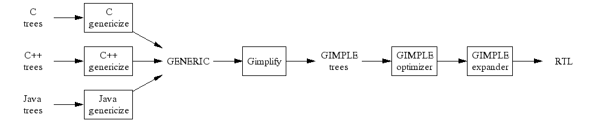

The branch is now closed. Tree SSA has been merged into mainline.
Merge status: https://gcc.gnu.org/ml/gcc/2004-05/msg00075.html.
Merge status: https://gcc.gnu.org/ml/gcc/2004-04/msg00217.html.
Merge status: https://gcc.gnu.org/ml/gcc/2004-03/msg00596.html.
The branch will be merged into mainline to become part of the next release of GCC. As such, the branch is now closed to new development.
The stabilization process will be driven by the merge criteria stated in https://gcc.gnu.org/ml/gcc/2004-02/msg01294.html. We expect to merge the branch into mainline by mid to late April.
The goal of this project is to build an optimization framework for trees
based on the Static Single Assignment (SSA) form [1]. The implementation currently lives in the
tree-ssa-20020619-branch branch.
A high-level overview of GENERIC/GIMPLE and the SSA implementation may be found in the Proceedings of the 2003 GCC Developers Summit (pages 171-193).
Internal design documentation is also available in the texinfo
documentation (doc/gccint.info in GCC's build directory).
Many further bits of information also can be found in the GCC Wiki.
Checkout the tree-ssa-20020619-branch branch
in our respository.
All contributions to the branch must also comply with the requirements detailed in the contributing documentation.
When posting to the development lists, please mark messages and patches with
[tree-ssa] in the subject. As this is a branch, and not
the mainline, the usual maintainer rules do not apply. This branch is
maintained by Diego Novillo
<dnovillo@redhat.com>. Approval from the usual maintainers will be
needed when submitting patches from the branch onto the mainline.
Current contributors to this project include Daniel Berlin, Steven Bosscher, Paul Brook, Zdenek Dvorak, Frank Eigler, Ben Elliston, Andrew Haley, Richard Henderson, Graydon Hoare, Jan Hubicka, Aldy Hernandez, Andreas Jaeger, Jeff Law, Andrew MacLeod, Toon Moene, Jason Merrill, Diego Novillo, Sebastian Pop, Graham Stott and Jeff Sturm.
Every patch submitted for review must either fix a PR or adress one of the issues mentioned in the merge criteria document.
Patches that break default bootstraps or introduce new regressions will be removed (if a fix is not immediately obvious).
There are regular mainline merges about 2 or 3 times a month. The latest merge tag is always added to GCC's version string. A merge may be postponed if there is major breakage in mainline.
While GCC trees contain sufficient information for implementing SSA, there are two major problems that make this difficult:
To address the first problem, we have created a common tree representation called GENERIC that is meant to be able to represent all the constructs needed by the different front ends while removing all the language dependencies. The design of GENERIC was discussed on the GCC lists. One of the main threads of discussion started with https://gcc.gnu.org/ml/gcc/2002-07/msg00890.html. A description of the current design can be found at https://gcc.gnu.org/ml/gcc/2002-08/msg01397.html.
To address the complexity problem we have implemented a new simplified intermediate representation based on GENERIC. The IR, called GIMPLE, is a very simple C-like three-address language that looks pretty straightforward to analyze and keeps all the high-level attributes of data types. GIMPLE is derived from the SIMPLE representation proposed by the McCAT project out of McGill University [2].
The data structures are the same trees used by GCC, but we impose rules on how the trees can be combined. For instance, the initial GENERIC representation for the expression:
a = b + c - d;
generates a single tree for the whole assignment statement. The GIMPLE version of that expression generates 2 different trees:
t1 = b + c; a = t1 - d;
So, when examining expressions we can now assume that a
PLUS operation will always have exactly two operands that are
variables. This also exposes other opportunities like finding common
expressions to eliminate (although it might also lead to code bloating, so
we need to be careful). This new pass was discussed at length on the GCC
lists, starting with https://gcc.gnu.org/ml/gcc/2002-01/msg00082.html.
The conversion from GENERIC into GIMPLE trees is implemented in
gimplify.c. Additionally, each front end may have a set of
language-specific helpers. For instance, the C/Objective-C front ends contain the helper
functions in c-simplify.c, the C++ front end has its own in
cp/cp-simplify.c. Predicates to determine whether a tree is
in GIMPLE form are defined in tree-simple.[ch].
Having trees in GIMPLE form enables language-independent analysis and transformation passes. Currently, we are implementing an SSA pass based on the algorithms described by Cytron et. al. [1].
The graph below describes the process:

The front ends described in the graph are just an example. In general, any front end that can emit functions-as-trees can be converted to emit GENERIC trees.
Conversion to SSA form is a three step process driven from
tree-optimize.c:
gimplify.c and c-simplify.c.tree-dfa.c.tree-cfg.c.
This implementation uses the same basic_block structure used by
the RTL optimizers. This allows us to share most of the existing CFG
code.tree-ssa.c.The file tree-pretty-print.c implements several debugging
functions that given a GENERIC tree node, they print a C representation of
the tree. The output is not meant to be compilable, but it is of great
help when debugging transformations done by the transformation passes.
This is a short list of the work that has already been finished or is ongoing.
Lowering from the language specific tree representations for C, C++, Java, Fortran 95, and Java bytecodes to GENERIC has been implemented. A more or less language-independent pass to lower from GENERIC to GIMPLE has also been implemented.
The CFG builder has been in place for a while now, and most of the work that is done on it is tuning and speeding it up where possible. Most of the DFA infrastructure is in place. Type-based alias analysis has been implemented, but it needs some work to be fast enough. An initial implementation of Andersen Points-to analysis is also available. Rewriting the tree into SSA form is finished. Writing out of SSA form can now handle variables with overlapping live ranges. This means that most of the basic infrastructure is in place.
The following optimization passes have been implemented to date:
All passes are enabled by default at -O1 and better.
Work on a framework for validation of the optimization passes has only just started. All analysis and optimization passes in the tree-ssa framework have the ability to dump an annotated intermediate representation. Support for scanning these tree dumps has been implemented for the existing DejaGNU testing framework.
This is a loosely organized list of unimplemented features, possible improvement, and planned analyses and optimizations. Suggestions for other passes and volunteers to help finish the different passes are welcome.